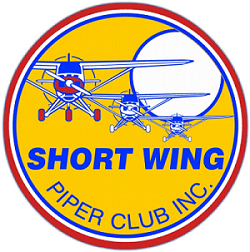
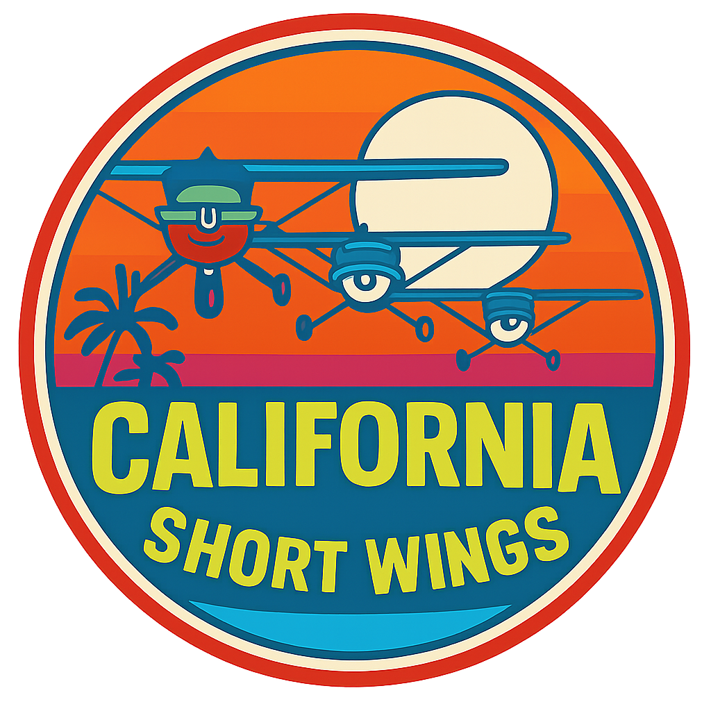

 
Welcome to the California Chapter of the Short Wing Piper Club
Home Upcoming Events Past Events Contact Links
Our chapter is dedicated to flying for fun and the preservation of the classic Pipers.
Shortwings are generally accepted to be the Vagabonds, Clippers, Pacers, Tri-Pacers, and Colts. However we welcome all flying machines, their pilots, and passengers.
We try our best to fly-in once a month as a group, as well as a bi-monthly homebase BBQ at KCPM.
We try to provide something interesting at each BBQ. Be it a tour of a J-5 restoration or a demo of how to use the bungee buddy tool to change shock cords.
Click here for our next meeting location and come join in the fun!
At this stage of the game I've been flying for forty-nine years (an unbelievable thought).
During that period of time I've owned a number of airplanes ranging from Cessna 195's to Clipped Cubs to P-51 Mustangs.
Through it all, there has been this underlying thought, "I ought to just buy a Tripacer and be done with it."
I've always regarded the airplane as being one of the most practical, and certainly one of the most cost-efficient ways of getting around.
So, at some point, I'll probably wind up with one. They make too much sense not to.
-- Budd Davidson